遊びで植物を育てよう
2019/10/20
水耕栽培キウイ3つをポット苗にしました。
水耕栽培が場所をとるので、一部をポットにしました。
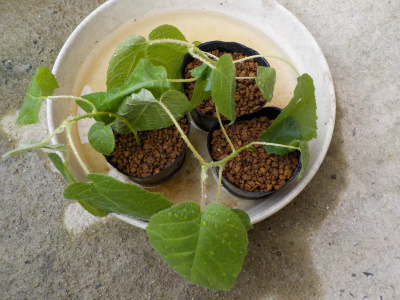
水耕栽培は根っこが弱いので、スポンジから外す時にぶちぶち根っこが切れました。
あんまり大きくなるまで育てちゃダメですね。
他のキウイも少し大きくなったらポットに移そうと思います。
【キウイTOP】
【果物TOP】
【園芸TOP】
2019/10/09
キウイの水耕栽培を１本にしました。
混み込みだったキウイを1本にしました。
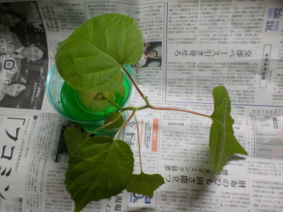
とってもすっきり。
思ってたより1本の大きさが小さかったです。
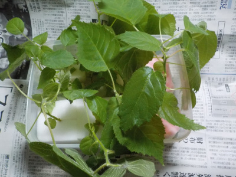
抜き取ったキウイも他のタッパーに入れて水耕栽培続行中です。
今後どうなるかなー。
まだ暖かい日もあるので成長するかな。
【キウイTOP】
【果物TOP】
【園芸TOP】
2019/07/28
キウイの苗が高温で痛められました。
置き場が悪かったようで、水分はあるけど萎れてしまいました。
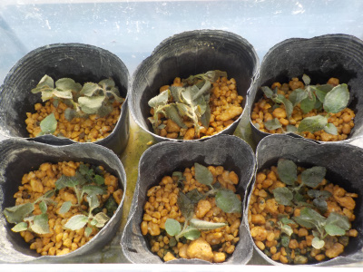
煮えた感じ。茹でた感じかな。
復活して欲しいけど無理かな。
【キウイTOP】
【果物TOP】
【園芸TOP】
2019/07/28
キウイの水耕栽培をしています。
タッパーで水耕栽培した時は根腐れしたんですが、水耕栽培キットだと順調に大きくなっています。
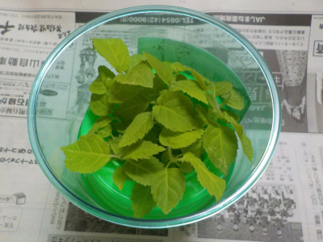
水耕栽培キットって凄い。
どんな仕組みで育っているんでしょうね。
でもこにまま大きく育つのは無理なんだろうな。
どこまで、何ヶ月育つか実験してみようと思います。
【キウイTOP】
【果物TOP】
【園芸TOP】
2019/07/06
キウイの植え直しをしました。
最初は均等に植えたんですが、枯れたものあったようでまばらになりました。
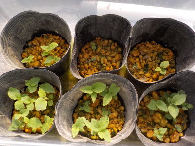
植わってないところが無駄になるので、植え直ししました。
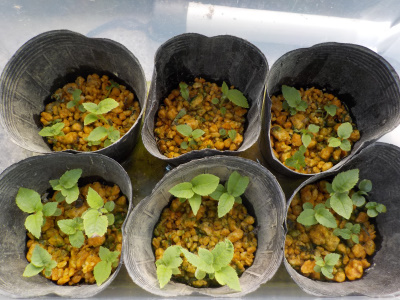
残りは枯れないで育って欲しいです。
【キウイTOP】
【果物TOP】
【園芸TOP】
2019/05/19
キウイのタッパー栽培はやめました。
タッパーで長期使用は根腐れしますね。
小さいのでピンセット使ってポットに植え替えました。
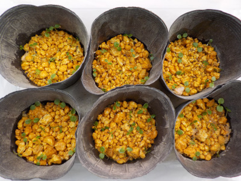
小さい苗の植え替えは面倒でした。
ポットは100均の薬箱っぽいプラケースに入れました。
ポットをケースに入れちゃえば保湿も根腐れも解決出来そう。始めからこうすればよかった。
もうタッパーの種まきはしません。
【キウイTOP】
【果物TOP】
【園芸TOP】
2019/04/03
キウイの種から根が出てきました。
写真ではわかりにくいですが、小さい根が出ました。
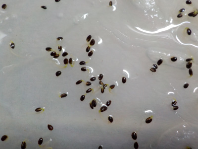
芽はあとどれくらいで出るかな。
育つのが楽しみです。
【キウイTOP】
【果物TOP】
【園芸TOP】
2019/03/10
キウイの種を蒔きました。
タッパーにキウイの種を蒔きました。
どうなるかなー。
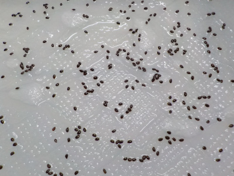
これの半分が発芽しても凄い数の苗が出来ます。
発芽後はどうやって育てるか只今検討中です。小さい苗は管理が難しいんだろうな。
【キウイTOP】
【果物TOP】
【園芸TOP】
2016/07/03
キウイにキノコかな？
キウイに変なのが付いてました。
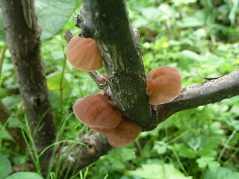
これはこのまま放置していいんんだろうか。
取った方がいいのかな？
【キウイTOP】
【果物TOP】
【園芸TOP】
2014/05/31
キウイの実が出来ていました。
以前に購入して植えていたキウイが初めて実をつけまいた。
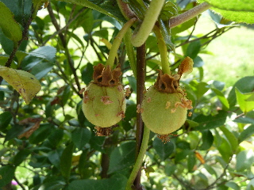
少し木が大きくなってきたので、そろそろ枝を切って挿し木をしてもいいかな？
切ったとしても2,3本くらいしか採れないですが、やってみたいです。
【キウイTOP】
【果物TOP】
【園芸TOP】
キウイを沢山育てて沢山食べたい。
【おいしいものを食べよう。】【たくさん寝よう。】
【ソロ活をしよう!】【季節感のあることをしよう。】【動画視聴はほどほどに。】【当サイトの全てのコンテンツは無断転載禁止です。】